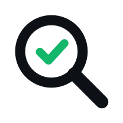

Know exactly what your API changed
Import an OpenAPI spec, run real requests and compare each response to the contract.
See the exact field that broke before it reaches production.

GitHub
Import an OpenAPI spec, run real requests and compare each response to the contract.
See the exact field that broke before it reaches production.